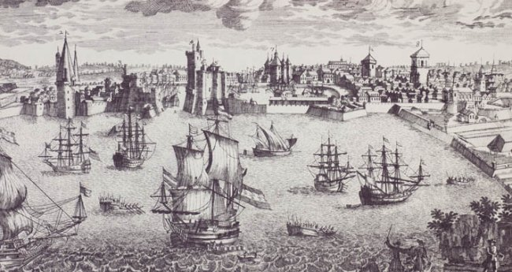
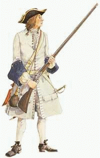
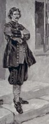
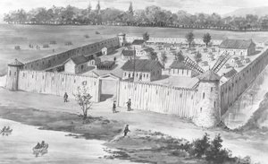

|
Le
Régiment Carignan-Salières
Au début des années 1660, les
Iroquois mènent une guérilla contre les Français et leurs alliés.
La
tension est à son comble, surtout à Montréal où les habitants ne
sortent pas de la ville fortifiée sans leur fusil. Le roi Louis XIV envoie ses
troupes. Le 19 novembre 1663, Louis XIV nomme Alexandre de Prouville de Tracy
"lieutenant général dans toute l'étendue des terres de notre
obéissance situées en l'Amérique Méridionale et
Septentrionale". La mission confiée au militaire est double:
déloger les Hollandais des Antilles et, au Canada, porter la guerre
jusque dans les foyers des Iroquois pour les exterminer entièrement. Le régiment appartient au
prince italien De Carignan et est dirigé par le marquis De
Salières. Il a combattu contre les Turcs et est
habitué aux guerres en rangées à l'européenne. L'armement dont il dispose est
des plus modernes, il utilise des fusils à platine. Le 19 avril 1665, quatre
compagnies quittent La Rochelle à bord du Vieux Siméon. Ils
croisent Le Brézé dans la région de l'île Percée en
Gaspésie, à son bord voyage
Tracy, qui a
quitté la Guadeloupe le 25 avril. Le Vieux Siméon arrive à Québec le
19juin. La population de la ville est heureuse de voir arriver ces
hommes qui, on l'espère, ramèneront la paix et la prospérité.
Le Brézé jette l'ancre à Tadoussac car, à cause de son
tonnage élevé, le capitaine craint de lui faire remonter le fleuve
jusqu'à Québec. Les soldats font le voyage à bord de deux
petits vaisseaux. Le 30 juin 1665, le représentant du roi est
accueilli avec un éclat auquel la colonie n'est pas habituée.  Le port de La Rochelle, capitale de l'Aunis, France. Pendant ce temps, huit autres compagnies voguent sur l'Atlantique, ayant quitté La Rochelle le 13 mai à bord de deux navires. Le premier atteint Québec le 19 août, et le second, le lendemain. À la fin du mois de mai, les huit dernières compagnies quittent la France. À bord du Saint-Sébastien voyagent Rémy de Courcelles, qui vient occuper le poste de gouverneur de la Nouvelle-France, et Jean Talon, le nouvel intendant. La traversée dure 117 jours et se termine par une demi-catastrophe. À l'approche des terres, les voyageurs "ont trop tôt ouvert les sabords de leurs navires, ce qui a fait que l'air y étant trop tôt entré, la maladie s'y est mise, qui a causé bien de la désolation". Huit soldats meurent et une centaine d'autres doivent être transportés à l'Hôtel-Dieu. Un si grand nombre de malades cause des problèmes aux religieuses, Marie de l'Incarnation écrit: " La salle de l'hôpital étant pleine, il en a fallu en mettre dans l'église, laquelle étant remplie jusqu'aux balustrades, il a fallu avoir recours aux maisons avoisinantes,..."
LES FORTS DU RICHELIEU Le gouverneur Rémy de Courcelles veut engager le combat sur-le-champ. Mais le marquis de Tracy, en charge des opérations militaires, opte pour une autre stratégie : empêcher les Iroquois d'accéder au fleuve Saint-Laurent, donc aux villes de Montréal, Trois-Rivières et Québec, en leur bloquant l'accès à la vallée du Richelieu.  Le capitaine Jacques de Chambly est chargé de l'édification du premier fort. Le 23 juillet 1665, il quitte Québec avec quatre compagnies (environ 200 hommes) et s'installe sur la rive gauche du Richelieu, au pied des rapides. On déboise d'abord un périmètre assez vaste pour éviter que l'ennemi ne se cache à proximité, puis on monte la palissade de pieux qui renferme des bâtiments de bois, une maison et des huttes pour les soldats. On termine le tout le jour de la fête de Saint-Louis d'où le nom de ce fort qu'on appelle aussi Richelieu. Un mois plus tard, le 23 août, le capitaine de Saurel va ériger un deuxième fort. Le marquis de Tracy lui ordonne de le construire à l'embouchure de la rivière, à l'emplacement de l'ancien fort Richelieu, incendié par les Iroquois en 1647. Une fois le fort achevé, on le baptise Saurel en l'honneur de son commandant.
À l'automne, Tracy répartit les compagnies entre les différents postes de la colonie: huit à Québec, cinq à Montréal, trois à Trois-Rivières, une à Sainte-Famille de l'île d'Orléans, deux au fort Richelieu, deux au fort Saint-Louis et les trois dernières au fort Sainte-Thérèse. Les soldats, faute de casernes, logent chez l'habitant. Ces derniers doivent subvenir à certains besoins, par exemple, au mois d'août, une ordonnance oblige les habitants de Québec à fournir, au cours de l'hiver, 800 cordes de bois aux soldats qui hiverneront à cet endroit.
DEUX EXPÉDITIONS AU PAYS DES IROQUOIS Il n'y a aucune entente entre les hommes dirigeant la colonie: le nouveau gouverneur Courcelles, le vice-roi Tracy, dont le titre est supérieur au gouverneur, le nouvel intendant Talon et le commandant du régiment, le marquis De Salières.
Ces quatre hommes viennent d'arriver au pays en 1665 et ne le connaissent pas. Le gouverneur est un petit roi qui décide de quand faire la guerre sans prendre conseil. De Tracy est le général en chef, arrivé des Antilles avec 4 compagnies de soldats et sa garde personnelle, il est un grand personnage de la France de cette époque. L'intendant Talon est souvent malade, quant à De Salières, c'est un homme irascible, à cheval sur les principes et qui, pour un mot mal placé, peut provoquer un duel.
La présence de 1200 soldats sème un peu d'inquiétude chez les
Iroquois. Le 19 novembre 1665, arrivent à Montréal, quatorze
canots avec douze ambassadeurs de trois nations iroquoises* ( les
Onontagués, Tsonnontouans et Goyagouins) sous la conduite de
Garakontié qui veut négocier une paix avec les Français.
Monsieur de Salières organise un grand déploiement pour les
accueillir: "Je les fis fort bien recevoir, ayant fait mettre sous
les armes les cinq compagnies et fait faire une décharge et tirer du
canon. Ils furent menés dans le château où je leur fournis des
pois, du tabac, du pain et autres choses que l'on donne aux Sauvages et
leur bailli souvent à manger et ne leur ai pas épargné mon vin et mon
tabac, leur en donnant de façon qu'il ne leur fît point mal". Douze soldats accompagnent les douze ambassadeurs iroquois à Québec où ces derniers rencontrent Tracy en décembre. Ce dernier promet à Garakontié "la paix et la protection du roi pour sa nation; il lui fit même espérer la même grâce pour les autres nations iroquoise, si elles aimaient mieux se porter d'elles-mêmes à leur devoir que de s'y laisser contraindre par la force des armes.... Cependant, ajoute le père François Le Mercier, dans la Relation de 1665-1666, comme l'on ne doit attendre aucun avantage de ces nations, qu'autant qu'on paraît en état de leur pouvoir nuire, on fit les préparatifs pour une expédition militaire contre celles avec qui il n'y avait point de paix conclue." PREMIÈRE EXPÉDITION, HIVER 1666
Le 15 janvier, le corps expéditionnaire atteint le Cap-de-la-Madeleine et, le lendemain, Trois-Rivières. Les soldats sont épuisés, alors que les habitants du pays n'ont rien perdu de leur bonne forme. L'expédition continue, le fort Saint-Louis est remis en état, le soldats malades sont remplacés et la troupe se complète de Montréalais conduits par Charles Lemoine. Le 30 janvier, soldats et Canadiens quittent le fort Sainte-Thérèse sans plus attendre l'arrivée des Algonquins qui devaient les guider vers les bourgades des Agniers. Courcelles, dans son impatience de marcher contre ses ennemis, n'avait pas jugé bon d'attendre plus longtemps, malgré le désaccord de Salières. La marche est de plus en plus pénible. On s'égare, on revient sur ses pas. Enfin, le 14 février, plutôt que d'arriver près d'un village Agnier, les Français se retrouvent à Corlaer (Schenectady), un établissement hollandais. Quelques jours auparavant, lors d'une escarmouche avec un petit groupe d'Iroquois, un officier et dix hommes avaient trouvé la mort. Le commandant hollandais apprend à Courcelles que la majorité des guerriers iroquois des villages avoisinants sont déjà partis faire la guerre à des tribus appelées "faiseurs de porcelaine". Le gouverneur prend alors la décision de revenir à Québec. Les dirigeants d'Albany sont surpris d'apprendre qu'une armée française se promène sur leur territoire sans l'autorisation du gouverneur de New York. Ce que tous ignorent, c'est qu'ils sont ennemis, la France et l'Angleterre étant en guerre depuis le 26 janvier 1666. Péniblement les soldats prennent le chemin du retour, après avoir attaqué une cabane d'Agniers, tuant deux hommes et une vieille femme. Le dimanche 21 février, arrivent les Algonquins avec des provisions de viande fraîche. Le retour est aussi pénible que l'aller. Les Iroquois, voyant ce qui se passe, décident d'attaquer l'armée à mesure qu'elle recule. Ils sont munis de raquettes, alors que les soldats en manquent, ils sont habiles et ont des fusils, ils tuent environ 70 soldats lors de cette pénible retraite. Le 8 mars 1666, le gouverneur arrive au fort Saint-Louis: il a laissé derrière lui plus d'une soixantaine d'hommes ayant succombé au froid ou à la faim. L'expédition est un échec complet, Courcelles s'en prend au père Charles Albanel, l'accusant d'avoir volontairement retardé le départ des algonquins qui devaient les guider et chasser pour nourrir les soldats, "ce qui s'est trouvé n'être pas vrai", lit-on dans le Journal de Jésuites. Pour les soldats français cette expédition est tragique car ils ne sont pas préparés à affronter un hiver canadien, plusieurs meurent de froid, tous souffrent beaucoup. Le gouverneur se rend compte que l'hiver est pire encore que l'Iroquois. On estime que cette expédition a fait entre 60 et 400 morts. L'armée revient à pied à Québec où, malgré le ridicule de la situation, on chante un Te Deum comme si on revenait d'une victoire, trop heureux d'en être revenus vivants. DEUXIÈME EXPÉDITION, AUTOMNE 1666
Le 24 juillet, Pierre de Saurel quitte Québec à la tête de 200 Français et 80 amérindiens pour aller attaquer les Agniers. En cours de route, l'expédition rencontre le chef agnier Bâtard Flamand qui se rend à Québec, accompagné de quelques prisonniers français, dont un des cousins de Tracy. Saurel décide alors de revenir dans la capitale où les négociations de paix traîneront en longueur. Le 1er septembre, l'intendant Talon fait parvenir à Tracy et à Courcelles un mémoire dans lequel il se demande "s'il est plus avantageux au service du roi de faire la guerre aux Agniers que de conclure la paix avec eux". Il invoque neuf raisons en faveur de la guerre, et six pour la paix. Cinq jours plus tard, Tracy décide de conduire lui-même une armée au pays des Iroquois et il se met à la tête de six cents soldats, six cents Canadiens, et de cent Hurons ou Algonquins. Le 14 septembre 1666, il y a un grand défilé dans les rues de Québec vers le fleuve pour l'embarquement des troupes qui logeaient dans cette ville. Le voyage peut se faire en barques, le fleuve n'étant pas gelé. Les différents corps d'armée se rejoignent, le 28 septembre, au fort Sainte-Anne sur le lac Champlain. Courcelles part immédiatement avec près du tiers des effectifs, Tracy quitte le fort le 3 octobre et l'arrière-garde le suit, le 7 octobre. La marche est pénible. "Monsieur le chevalier de Chaumont, raconte Marie de l'Incarnation, m'a assuré que, pour avoir porté son sac où il y avait un peu de biscuit, il lui vint au dos une grosse tumeur; car il faut que les chefs se chargent aussi bien que les autres, aucune bête de somme ne pouvant aller par des lieux si étroits et si dangereux. Ils se sont vus en des périls extrêmes, dans des rivières et des rapides, où, à cause de la profondeur de l'eau et de l'incertitude du fond, ils ont été obligés de se faire porter par des Sauvages. Un Suisse ayant voulu se charger, dans un mauvais pas, de M. de Tracy, qui est un des plus grands hommes que j'aie vus, quand il fut au milieu, il était sur le point de tomber en défaillance, lorsque, trouvant heureusement une roche, il se jeta dessus. Alors un Huron fort et courageux, se jetant à l'eau, le retira du danger et le porta à l'autre bord." Bientôt les vivres viennent à manquer et l'on doit diminuer la ration quotidienne de chacun. Les Iroquois sont bien au fait de la marche de l'armée française. Le 14 octobre, celle-ci approche de la première bourgade iroquoise. Le temps est affreux. Tracy oblige ses hommes à marcher toute la nuit, au son des tambours. Les Iroquois désertent le premier village que les Français envahissent sans peine et qu'ils incendient, après l'avoir pillé. Trois autres villages subissent le même sort. Les villages contenaient assez de provisions pour nourrir la population entière de la Nouvelle-France pendant deux ans. Craignant les rigueurs de l'automne avancé, Tracy ordonne le retour. Mais, avant de partir, les quatre aumôniers qui accompagnaient les troupes célèbrent la messe près des ruines fumantes, et les officiers prennent possession du territoire au nom du roi de France. Pour les Français revenir à Québec n'est pas facile: les eaux du Lac Champlain sont gonflés par les forts vents d'octobre qui font chavirer deux canots, 8 hommes se noient dans les eaux glacées. Le régiment rentre à Québec le 14 novembre épuisé mais triomphant. La population jubile, on sent enfin que la paix devient possible.
HÉRITAGE DU RÉGIMENT DE CARIGNAN-SALIÈRES Les deux expéditions du régiment de Carignan-Salières en territoire iroquois se soldent par des demi-échecs. Peu d'Iroquois perdent la vie. Même si les réserves de vivres ont été anéanties, il n'est pas prouvé que les habitants des villages détruits aient eu réellement à souffrir de la faim. En fait, ces deux expéditions sont des désastres militaires, mais elles seront quand même bénéfiques pour la colonie car, pour les Iroquois, c'est un choc: leur territoire n'est plus inviolable. Ce qui surprend aussi les Iroquois c'est la façon différente de faire la guerre des Européens. Incendier des champs de maïs et des villages pour mener les gens à la famine, on ne fait pas cela chez les Amérindiens, du moins pas avant le contact avec les Européens. Les Iroquois se réfugient chez d'autres nations alliées pour passer l'hiver. Ils sentent que ce n'est qu'une question de temps et qu'il vaut mieux signer la paix. Au printemps 1667, les Cinq-Nations témoignent une bonne disposition pour la paix. Des pourparlers ont lieu et, le 8 juillet, lors d'une grande cérémonie avec beaucoup de décorum et un grand banquet, la paix intervient avec les Iroquois qui laissent quelques familles en otage. Considérant que sa mission est accomplie, Tracy quitte Québec, à bord du Saint-Sébastien, le 28 août 1667. Parmi les soldats, plus de quatre cents décident de demeurer dans la colonie. On évalue à environ 250 le nombre de ceux qui sont morts au cours de leur séjour. Quant aux autres, ils regagnent la France entre 1667 et 1669. Louis XIV souhaite qu'une partie des officiers et des soldats demeurent en Nouvelle-France et se transforment en colons. À cet effet, il leur accorde des vivres pour un an et des gratifications dont le montant varie selon le grade. L'intendant Talon voit à ce que des terres leur soient concédées. Les officiers reçoivent des seigneuries concédées sur l'ancien chemin des Iroquois, mais aussi dans la région de Montréal et le long du Saint-Laurent: Chambly, Contrecoeur, Sorel, Saint-Ours, La Noraye, Berthier, La Durantaye, Varennes, Lavaltrie, Soulanges, Verchères, Lanaudière, La Pérade, Boisbriand.   Les officiers devenus seigneurs attirent le
plus possible de soldats de leur régiment sur leurs terres. L'élargissement de
l'occupation de la vallée du Richelieu et du Saint-Laurent est donc
basé sur un peuplement militaire. C'est la consolidation de
la colonie: on augmente l'étendue de l'occupation du sol, le
peuplement, et on assure un système défensif par un réseau de
seigneuries formées de militaires, surtout le long du Richelieu, mais
aussi dans la région de Montréal et le long du Saint-Laurent. À la fin des années 1660,
tous les espoirs semblent permis pour l'essor de la colonie. Les
colons commencent à quitter les lieux fortifiés où ils se tenaient
réfugiés depuis des années, surtout à Montréal, et ils s'étendent
rapidement vers les deux extrémités de l'île, Pointe-aux-Trembles et
Sainte-Anne-de-Bellevue. Les deux rives du fleuve se peuplent
de colons. La présence des soldats restés dans la colonie
rassure la population, lui donne confiance dans l'avenir. Le fait
que la paix soit signée va aussi permettre l'arrivée de nouveaux
immigrants et la population va se développer plus rapidement après
1665 qu'avant.
Les officiers devenus seigneurs attirent le
plus possible de soldats de leur régiment sur leurs terres. L'élargissement de
l'occupation de la vallée du Richelieu et du Saint-Laurent est donc
basé sur un peuplement militaire. C'est la consolidation de
la colonie: on augmente l'étendue de l'occupation du sol, le
peuplement, et on assure un système défensif par un réseau de
seigneuries formées de militaires, surtout le long du Richelieu, mais
aussi dans la région de Montréal et le long du Saint-Laurent. À la fin des années 1660,
tous les espoirs semblent permis pour l'essor de la colonie. Les
colons commencent à quitter les lieux fortifiés où ils se tenaient
réfugiés depuis des années, surtout à Montréal, et ils s'étendent
rapidement vers les deux extrémités de l'île, Pointe-aux-Trembles et
Sainte-Anne-de-Bellevue. Les deux rives du fleuve se peuplent
de colons. La présence des soldats restés dans la colonie
rassure la population, lui donne confiance dans l'avenir. Le fait
que la paix soit signée va aussi permettre l'arrivée de nouveaux
immigrants et la population va se développer plus rapidement après
1665 qu'avant.
 Éventuellement les hostilités reprennent entre les Français et les Iroquois. L'évènement le plus important étant, en 1689, le "massacre de Lachine". Ironie du sort: certains anciens soldats du régiment de Carignan et leurs familles sont tués par les Iroquois cette nuit-là, alors qu'ils ne sont plus soldats mais agriculteurs. En fait, 80 personnes meurent et leurs biens sont incendiés par un millier d'Iroquois qui font un raid de nuit à cet endroit stratégique pour le commerce de la colonie, les rapides de Lachine, la porte d'entrée pour les Pays d'En-Haut. Les mesures de sécurité sont relâchées et beaucoup de gens ne vont plus dormir dans le fort à proximité, ils préfèrent dormir dans leur maison, c'est ceux-là qui sont tués. Mais l'essor de la colonie est bel et bien enclenché, et les hostilités iroquoises ne font pas reculer les canadiens. On dirait aujourd'hui "qu'on n'arrête pas le progrès".
|


 Le 9 janvier 1666, 300 soldats du régiment de Carignan et 200
habitants, qui se sont portés volontaires et que l'on surnomme les
Capots Bleus, quittent Québec pour le pays des Iroquois. La
troupe avance lentement. Les soldats, pour la plupart, chaussent
des raquettes pour la première fois. De plus, tous, même le
gouverneur et les officiers, transportent sur leur dos vingt-cinq
à trente livres de biscuits, couvertures et autres provisions.
Trois jours à peine après le départ, les militaires sont
exténués. Plusieurs ont "les genoux et les doigts ou
autres parties entièrement gelés et le reste du corps couvert de
cicatrices. et quelques autres, entièrement entrepris et engourdis par
le froid, seraient morts sur la neige, si on ne les avait portés avec
beaucoup de peine jusqu'au lieu où l'on devait passer la nuit".
Le 9 janvier 1666, 300 soldats du régiment de Carignan et 200
habitants, qui se sont portés volontaires et que l'on surnomme les
Capots Bleus, quittent Québec pour le pays des Iroquois. La
troupe avance lentement. Les soldats, pour la plupart, chaussent
des raquettes pour la première fois. De plus, tous, même le
gouverneur et les officiers, transportent sur leur dos vingt-cinq
à trente livres de biscuits, couvertures et autres provisions.
Trois jours à peine après le départ, les militaires sont
exténués. Plusieurs ont "les genoux et les doigts ou
autres parties entièrement gelés et le reste du corps couvert de
cicatrices. et quelques autres, entièrement entrepris et engourdis par
le froid, seraient morts sur la neige, si on ne les avait portés avec
beaucoup de peine jusqu'au lieu où l'on devait passer la nuit".